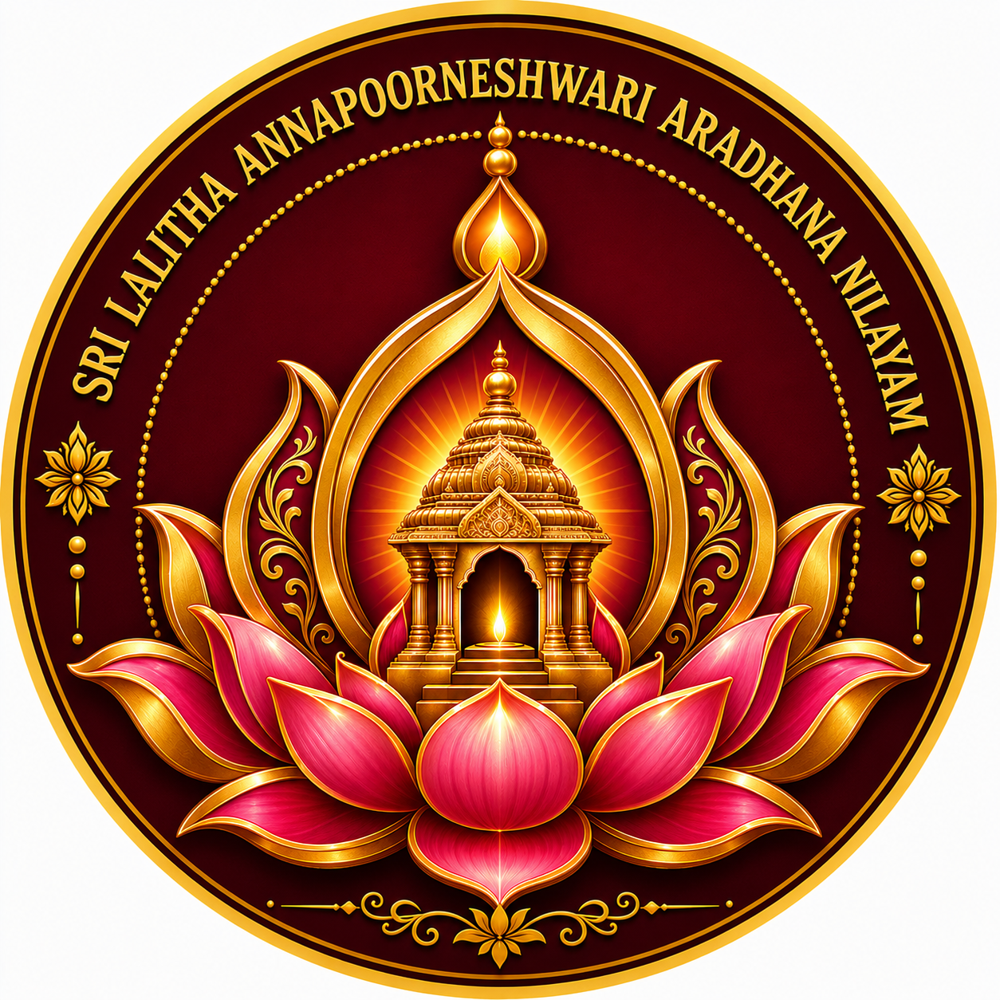

Pronunciation
Build a clear foundation for reciting the sacred names with care.
Explore →శ్రీ మాత్రే నమః

SLAANSri Lalitha Annapoorneshwari Aradhana NilayamSri Lalitha Annapoorneshwari Aradhana Nilayam
A humble space for the worship of Sri Lalitha Tripurasundari Devi, Lalitha Sahasranama Parayana, Sri Vidya learning and seva.
Enter a space of devotion, learning and remembrance of Amma. Discover Her worship, the spirit of Sri Vidya and the devotional approach of SLAAN.
Know Ammaశ్రీ మాత్రే నమః
Learn with శ్రద్ధ • శుద్ధ ఉచ్చారణ • భక్తి — step by step, with a foundation suitable for sincere beginners.
Build a clear foundation for reciting the sacred names with care.
Explore →Learn the structure and practice of Lalitha Sahasranama Parayana.
Learn more →Grow through regular group learning and devotional practice.
Join →A collective devotional effort centred on Lalitha Sahasranama Parayana, with the long-term sankalpam of supporting Sri Vidya Gnana Peetham, Mokshapuri, Kaanchipuram.
Know the SankalpamExplore the foundations of Sri Vidya learning and the place of Guru, discipline, devotion and traditional guidance.
Explore Sri VidyaMokshapuri, Kaanchipuram
Promoting Sri Vidya Upasana for Lokakalyanartham.
Know MoreLearn, recite, participate and serve according to your capacity.
Join SLAAN